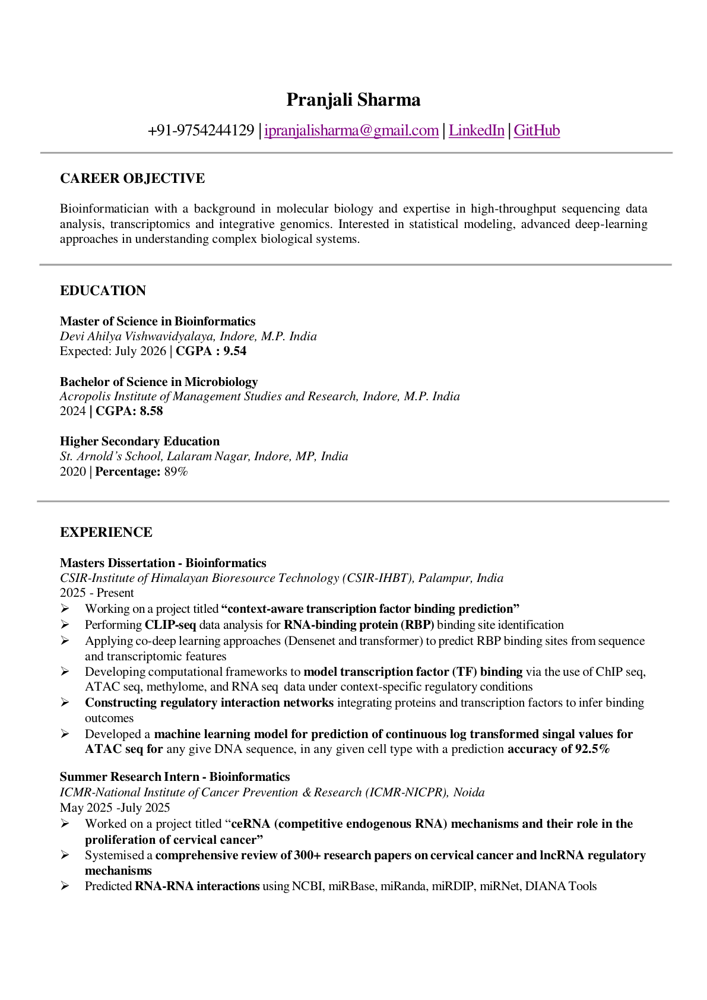

M.Sc. Bioinformatics
Devi Ahilya Vishwavidyalaya, Indore
CGPA 9.54Academic credentials
Devi Ahilya Vishwavidyalaya, Indore
CGPA 9.54Acropolis Institute of Management Studies and Research, Indore
CGPA 8.58St. Arnold's School, Lalaram Nagar, Indore
89%Accepted for COPM2026, Computational Oncology and Personalized Medicine: From Genome to Treatment, AI & Precision Medicine, hosted online by Silesian University of Technology on April 29, 2026.
The abstract presents a dual-stream ATAC-seq regression framework that combines 1,000 bp DNA windows with RNA-seq multi-gene context to model cell-type-specific chromatin accessibility.
Models + systems
DualStream-ATAC regresses log2 fold-enrichment ATAC-seq signals from DNA sequence and RNA-seq derived multi-gene context vectors, linking static motifs with dynamic cellular environments.
Visit repositorySix-branch late-fusion model combining DNA sequence, k-mer density, AlphaFold protein graphs, RNA-seq, causal neighbors, and ATAC accessibility.
View GitHub profileGenome-wide RNA-seq causal network inference pipeline using knockoff selection, MB-LASSO, PPI filtering, and directed acyclic edge orientation.
Visit repositoryEnd-to-end RNA-seq workflow for quality control, alignment, quantification, and differential expression analysis.
Visit repositoryDissertation work applying DenseNet and transformer-style approaches to predict RNA-binding protein binding sites from sequence and transcriptomic features.
View GitHub profileExperience
CSIR-Institute of Himalayan Bioresource Technology, Palampur
Developing context-aware TF binding frameworks, CLIP-seq/RBP prediction workflows, regulatory interaction networks, and reproducible sequencing analysis pipelines.
ICMR-National Institute of Cancer Prevention & Research, Noida
Studied ceRNA mechanisms in cervical cancer, curated 300+ papers, predicted RNA-RNA interactions, and supported data curation with R and Python.
Toolkit
Python, R, Bash, Java, C/C++, MySQL, HTML, pandas, NumPy, scikit-learn, BioPython, tidyverse, ggplot2, Bioconductor, DenseNet, graph transformers, neural networks.
RNA-seq, CLIP-seq, ChIP-seq, ATAC-seq, STAR, HISAT2, Bowtie2, Piranha, Peakachu, SRA Toolkit, Trimmomatic, fastp, Cutadapt, FastQC, MultiQC.
NCBI Entrez, miRBase, miRNet, TRRUST, DIANA Tools, STARBASE, miRDIP, miRanda, BLAST, Clustal Omega, Linux/Ubuntu, Git, Excel, Windows.
CV
The CV includes education, research experience, skills, certifications, and references in a single focused document.

Contact
Open to collaborations in regulatory genomics, sequencing pipelines, structural biology, and machine-learning applications in transcriptomics.